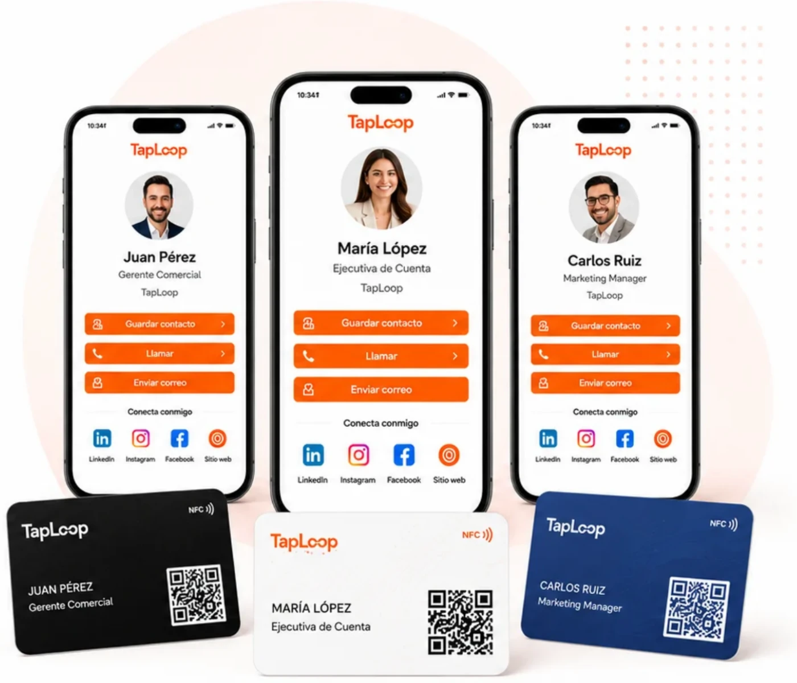
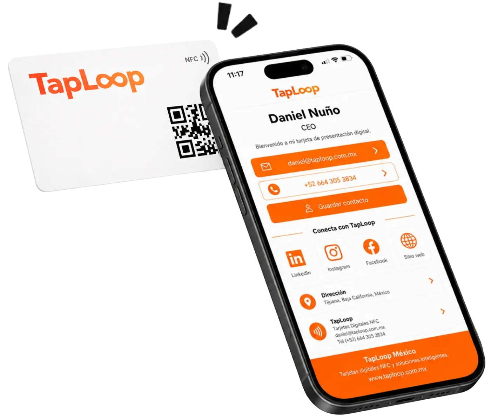
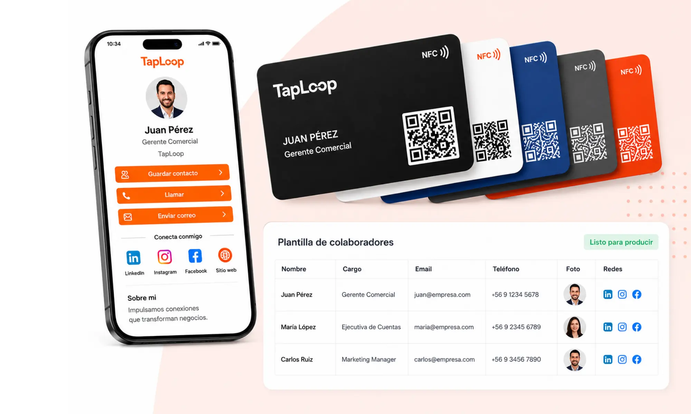

Nombre y puesto
Presenta cada perfil de forma profesional.
Solución para empresas
Entrega a cada colaborador una tarjeta de presentación digital NFC y un perfil digital personalizado, con una identidad uniforme para toda tu empresa.
Perfil individual por colaborador
Mantén una misma línea visual para toda tu empresa, mientras cada colaborador comparte su nombre, puesto, contacto, enlaces y perfil digital personalizado.
Presenta cada perfil de forma profesional.
Comparte contacto directo y actualizado.
Incluye redes y enlaces clave.
Mantén una imagen uniforme.

Opciones para tu equipo
Selecciona la tarjeta TapLoop que mejor se adapta al perfil de tu equipo y al nivel de presentación que buscas.
Una opción versátil y profesional para colaboradores, ventas, atención a clientes y eventos corporativos.
Ver tarjeta PVC
Pensada para directivos, socios y presentaciones de alto impacto con una imagen más exclusiva.
Ver tarjeta metálica
Problema y solución
Evita tarjetas improvisadas, diseños distintos y datos desactualizados. Con TapLoop, cada colaborador comparte su contacto con una imagen uniforme y profesional.


Proceso de implementación
Te acompañamos desde la definición de tu proyecto hasta la entrega de tus tarjetas NFC listas para usar.

Confirmamos cantidad de tarjetas, material y objetivos del equipo.
Recibes un formulario o plantilla para reunir la información de cada colaborador.
Creamos tu tarjeta y perfil digital alineados a tu marca y revisamos ajustes contigo.
Programamos, probamos y enviamos tus tarjetas listas para compartir.
Beneficios para empresas
TapLoop ayuda a estandarizar la imagen de tu empresa, facilitar el intercambio de contacto y entregar una experiencia profesional en cada interacción.
Cada integrante cuenta con su propio contacto, enlaces y perfil digital.
Recopilamos la información del equipo y simplificamos el proceso.
Puedes agregar más colaboradores manteniendo la misma línea visual.
Te apoyamos desde la propuesta hasta la entrega final.
Ejemplos o casos de uso
Cada área de tu empresa puede aprovechar las tarjetas NFC y los perfiles digitales de TapLoop para alcanzar sus objetivos y generar más conexiones.

Comparte tu contacto, WhatsApp, catálogo y presentación en segundos. Ideal para cerrar más reuniones y dar seguimiento al instante.

Cada asesor tiene su propia tarjeta y perfil, pero mantiene la identidad y profesionalismo de la agencia en cada interacción.

Directivos y gerentes pueden usar tarjetas premium con su perfil individual para fortalecer su red de contactos y la imagen corporativa.
Preguntas frecuentes para empresas
Respuestas sobre personalización, implementación y crecimiento de una solución corporativa TapLoop.
Sí. Cada tarjeta y perfil digital puede incluir el nombre, puesto, teléfono, correo, WhatsApp, fotografía, redes y enlaces del colaborador correspondiente.
Sí. Creamos una línea visual unificada con el logo, colores y estilo de la empresa, y personalizamos los datos de cada integrante.
Sí. Una empresa puede utilizar tarjetas PVC para equipos comerciales y tarjetas metálicas para directivos, gerentes o socios.
Sí. Es posible solicitar tarjetas adicionales manteniendo el diseño corporativo aprobado para el equipo.
Sí. Programamos el chip NFC, vinculamos el código QR, verificamos cada perfil digital y entregamos las tarjetas listas para compartir.
Sí, de acuerdo con la solución contratada. Los datos y enlaces pueden actualizarse sin tener que reemplazar la tarjeta física.
Cuéntanos cuántos colaboradores forman parte de tu equipo y prepararemos una propuesta personalizada.